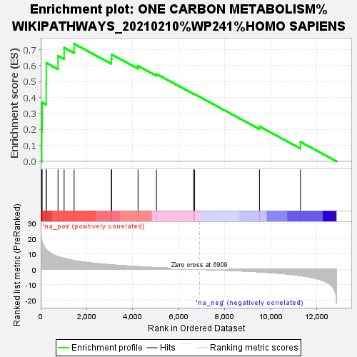
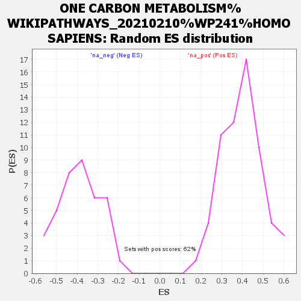

| | | Dataset | SevereRank |
| Phenotype | NoPhenotypeAvailable |
| Upregulated in class | na_pos |
| GeneSet | ONE CARBON METABOLISM%WIKIPATHWAYS_20210210%WP241%HOMO SAPIENS |
| Enrichment Score (ES) | 0.7370948 |
| Normalized Enrichment Score (NES) | 1.859861 |
| Nominal p-value | 0.0 |
| FDR q-value | 0.06917333 |
| FWER p-Value | 0.51 |
Table: GSEA Results Summary

Fig 1: Enrichment plot: ONE CARBON METABOLISM%WIKIPATHWAYS_20210210%WP241%HOMO SAPIENS
Profile of the Running ES Score & Positions of GeneSet Members on the Rank Ordered List
| SYMBOL | RANK IN GENE LIST | RANK METRIC SCORE | RUNNING ES | CORE ENRICHMENT | | 1 | FOLH1 | 45 | 18.946 | 0.1889 | Yes |
| 2 | MTHFD2 | 64 | 17.915 | 0.3695 | Yes |
| 3 | TCN2 | 238 | 12.879 | 0.4869 | Yes |
| 4 | MTHFD1L | 244 | 12.831 | 0.6168 | Yes |
| 5 | GLRX | 753 | 8.234 | 0.6609 | Yes |
| 6 | CHDH | 1019 | 7.129 | 0.7127 | Yes |
| 7 | AHCYL2 | 1453 | 5.721 | 0.7371 | Yes |
| 8 | MTHFD1 | 3073 | 2.957 | 0.6411 | No |
| 9 | DHFR | 3088 | 2.929 | 0.6698 | No |
| 10 | AHCY | 4234 | 1.740 | 0.5984 | No |
| 11 | MAT1A | 5033 | 1.133 | 0.5478 | No |
| 12 | SHMT1 | 6648 | 0.138 | 0.4236 | No |
| 13 | MTFMT | 6693 | 0.115 | 0.4213 | No |
| 14 | MTRR | 9513 | -1.677 | 0.2190 | No |
| 15 | MTR | 11297 | -4.110 | 0.1219 | No |
Table: GSEA details [plain text format]

Fig 2: ONE CARBON METABOLISM%WIKIPATHWAYS_20210210%WP241%HOMO SAPIENS: Random ES distribution
Gene set null distribution of ES for ONE CARBON METABOLISM%WIKIPATHWAYS_20210210%WP241%HOMO SAPIENS